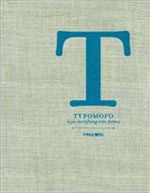
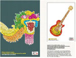
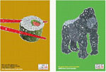

Typomofo
Measures:245mm×285mm
Binding:350pp., Hardback
Date:December 2008
ISBN:978-981-245-772-1
Subject:Architecture/Interior
Publisher:PageOne (Singapore)
Description:
Designers have always had a love affair with type and with the proliferation of digital tools for graphic formations, this relationship has intensified. Typography is becoming more experimental and varied as a medium for communication and personal expression. Many see this as a liberation from the constraints of the grid and rules of legibility, making it possible to restore elements of expression and meaning in letters. In the same spirit, TYPOMOFO showcases works that demonstrate how type today has morphed into a new breed of expressive graphic design. From ink-drawn scripts to duct-tape graffiti lettering, the works are divided into four chapters: from type projects that evoke a handmade aesthetic, to digital illustrations, to mixed-media typographic works, and the unconventional use of conventional type. With projects ranging from radical experiments to large-scale graphic installations, as well as details of their design process.TYPOMOFO reveals how recent typographical forms are conceptualized and creatively applied as a graphic device to form symbolic images and patterns; to be the message rather that just its conveyor. TYPOMOFO seeks to be an inspiring source for those who are keen in the creative possibilities of type as part of a more sophisticated visual language that communicates and intrigues.
Price: гд 290 RMB
(Only for Chinese market)


